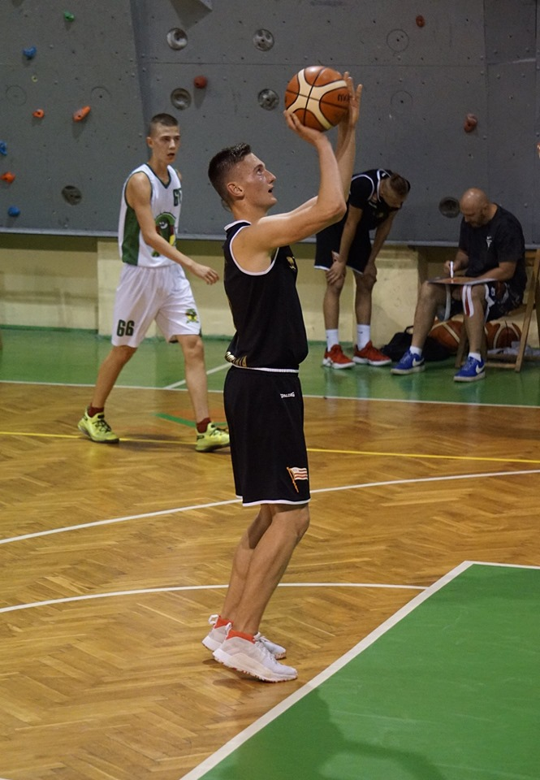
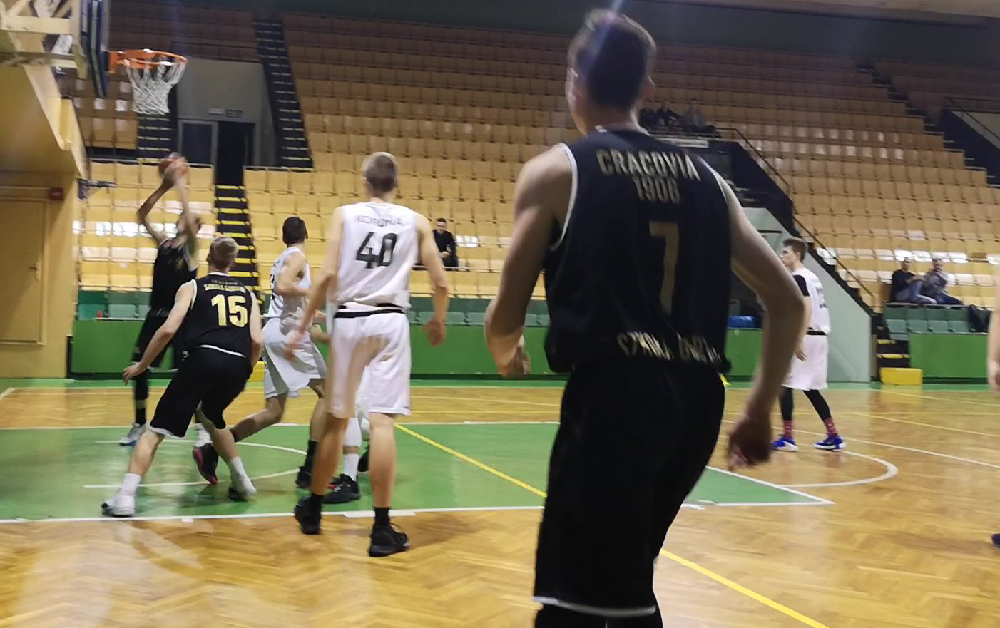

Informacje o mnie
Nazywam się Mateusz Łopatkiewicz. W koszykówkę zacząłem grać w sezonie 17/18. Obecnie reprezentuje barwy klubowe KS Cracovia 1906 Szkoła Gortata Kraków
Na tej stronie będziecie mogli zobaczyć moje najciekawsze akcje z meczów, highlighty, staty
Obczaj moje media społecznościowe. Linki poniżej :)